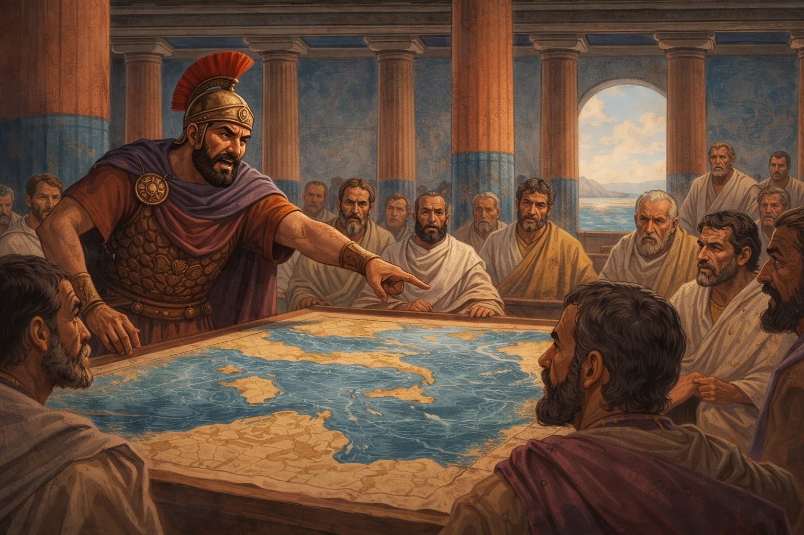
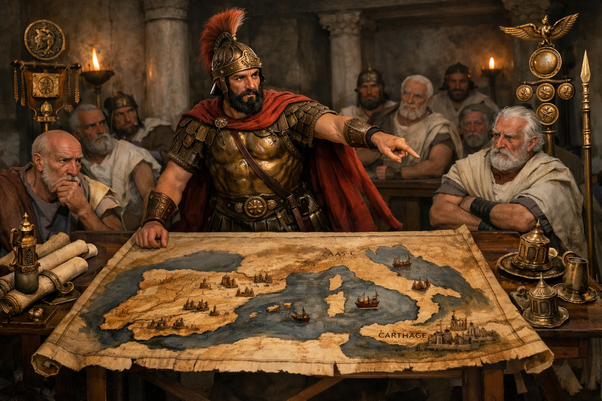
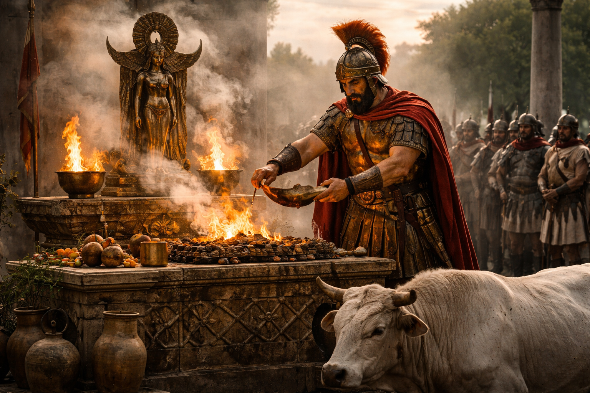
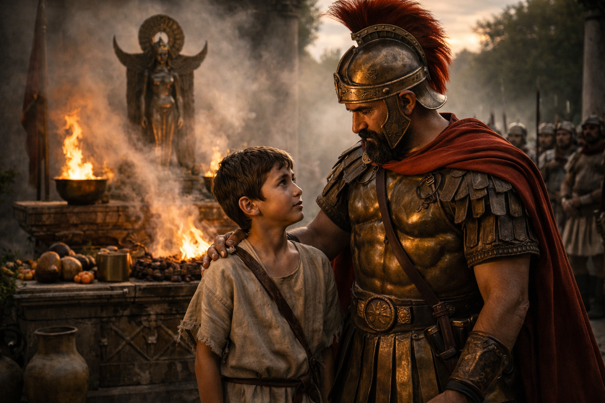
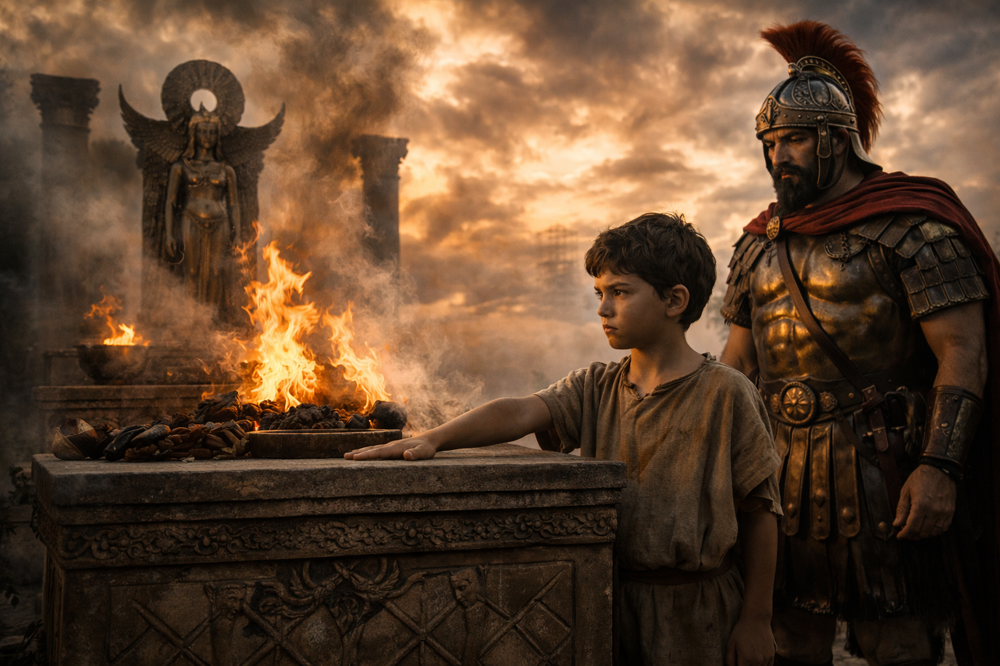
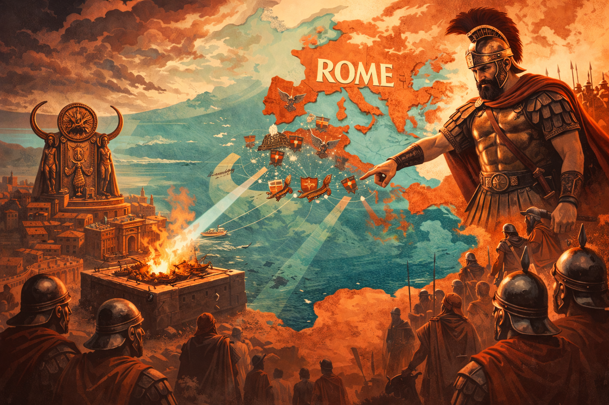
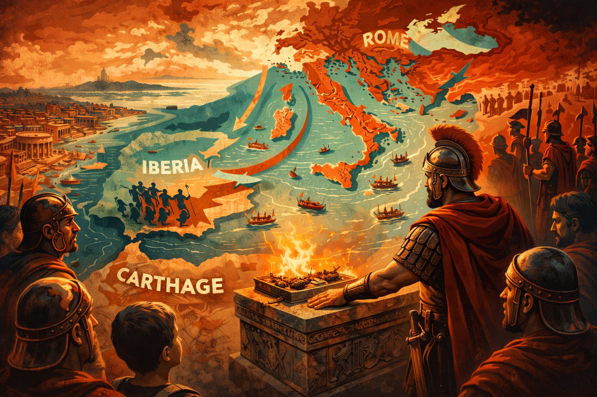
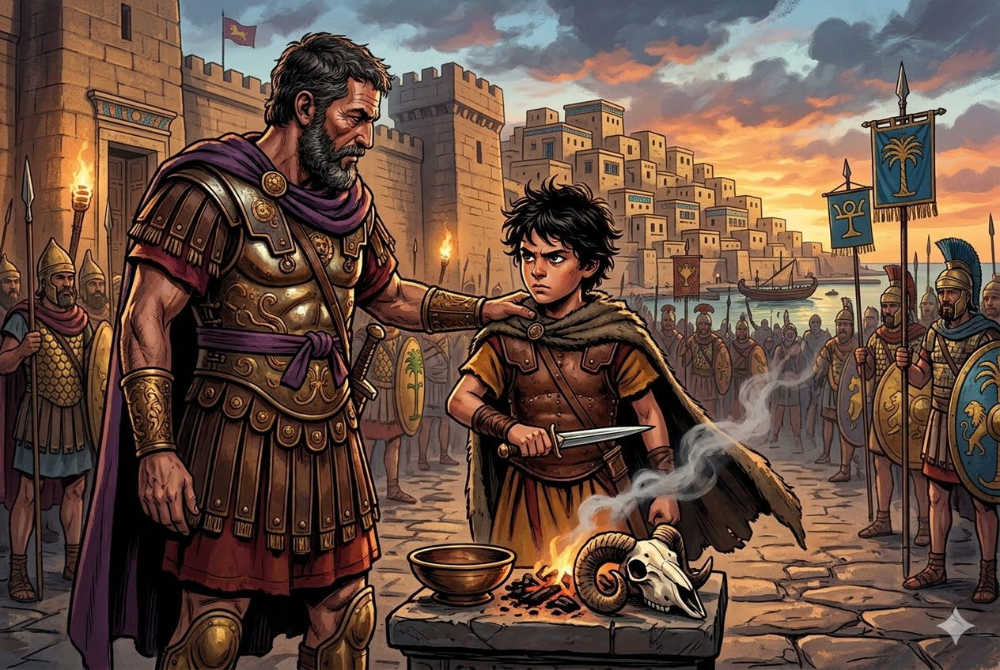
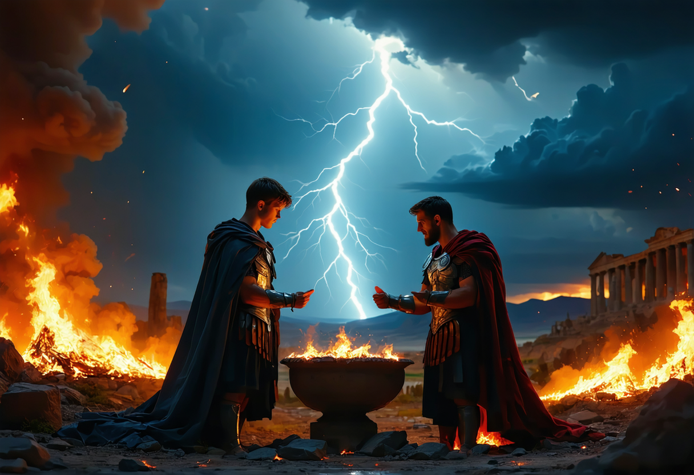
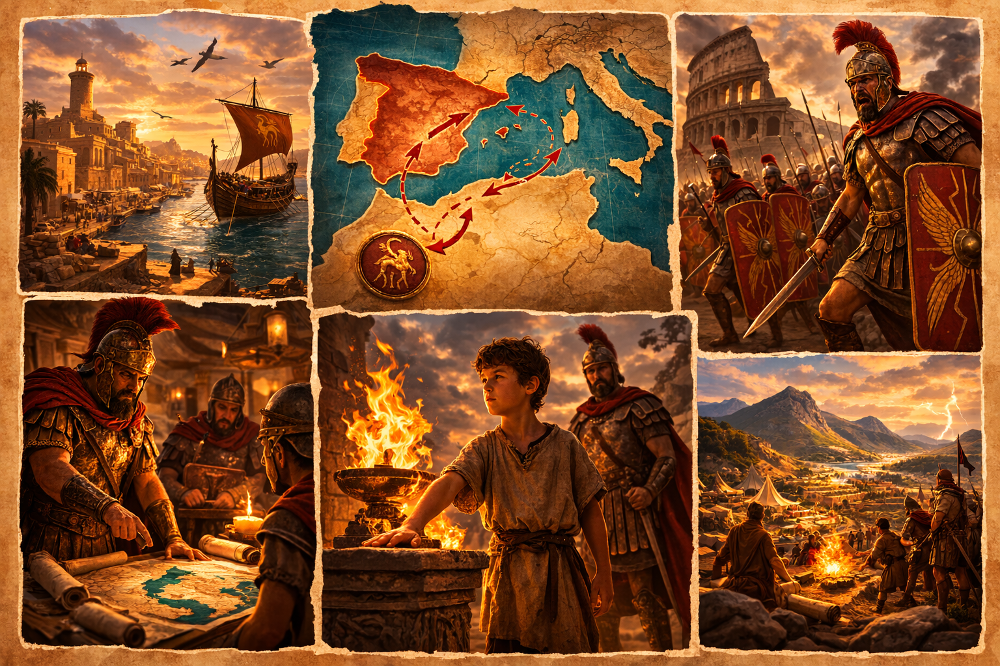

ROMA NU
Een historisch verslag van wraak, strategie en de eed van een jonge jongen.
TEKST 29: HANNIBAL

Hamilcar, de Punische leider, kon moeilijk verdragen dat de Romeinen de eerste Punische Oorlog hadden overwonnen.
Hij zei tegen de senatoren van Carthago: 'Rome zal niet tevreden zijn, totdat ze alle grond en alle zeeën zal hebben veroverd. Als wij hen niet tegen zullen houden, dan zullen de Romeinen onze rijkdom, onze stad en ons volk vernietigen.'
Sta mij toe om met de Punische troepen naar Spanje te gaan. Als ik immers daar grotere rijkdom en meer soldaten zal hebben verzameld, zullen wij opnieuw oorlog voeren tegen de Romeinen.'
De senatoren antwoordden: 'Als jij alle troepen naar Spanje geleid zal hebben, zullen wij hier geen bewakers hebben. Hoe zal jij de stad bewaken?'
Ik zal Carthago zeer goed beschermen, als ik de aandacht van de Romeinen naar Spanje zal hebben gewend.'
De senatoren stemden in.

Hamilcar bracht een offer voordat hij wegging met al zijn troepen.

Hij bad tot de goden: 'Jullie, die altijd Carthago hebben beschermd, steun mij wanneer ik de oorlog zal voorbereiden tegen de Romeinen.'
Zijn zoon Hannibal, een jongen van negen jaar, had gehoord dat zijn vader bad tot de goden.

Hij vroeg: 'O vader, breng mij met jou mee naar Spanje. Ik zal sterker vechten tegen de Romeinen, die ik haat zoals jij hen haat.'
Vader lachte: 'Later, wanneer jij de krijgskunst zult hebben geleerd, zul jij een zeer goede leider zijn en zul jij tegen de Romeinen grote overwinningen behalen.'
'Als jij mij meegenomen zal hebben, zal ik van jou de krijgskunst leren. Wie zal mij beter onderwijzen dan jij?'
'Goed, ik zal jou met mij meenemen, als je het woord van trouw gegeven zult hebben aan de goden van jouw vaderland.'
Meteen plaatste de jongen zijn rechterhand op het altaar waarop de vader het offer had gebracht.

Hij zwoer: 'Zolang als ik zal leven, zal ik de goden van mijn vaderland vereren. Ik zal altijd een vijand van Rome zijn. Ik zal niet rusten, totdat Carthago zal regeren over land en op zee. Dit zweer ik, Hannibal, zoon van Hamilcar, bij de Punische goden, die mij met de bliksem zullen treffen als ik ooit mijn eed zal hebben gebroken.'
HANNIBAL:
THE ORIGIN STORY 🌩️
Wanneer je vader toxic is in de chat na een verloren match, en jij besluit je hele leven te wijden aan wraak.




"Zolang ik leef blijf ik onze goden reppen. Ik ben voor altijd opps met Rome.
Geen rust tot Carthago de hele map bestuurt over land en zee.
Dit zweer ik. Als ik lieg, mogen de goden me insta-bannen met de bliksem." ⚡
